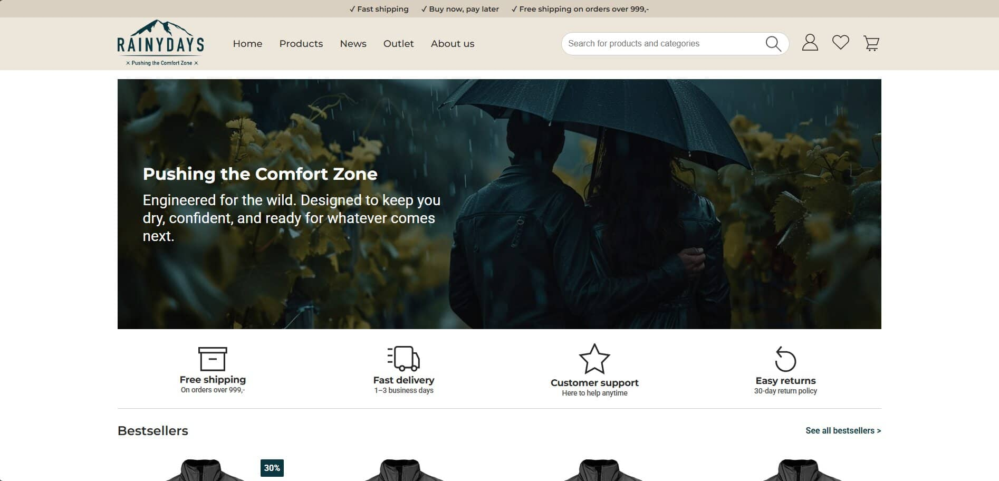
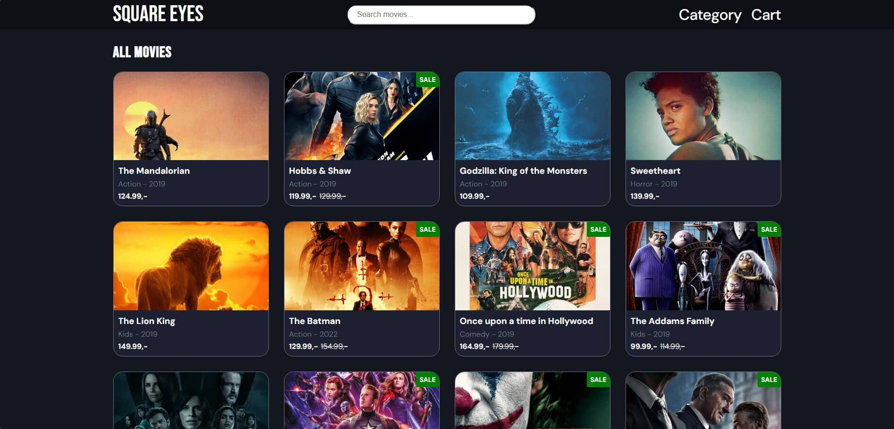
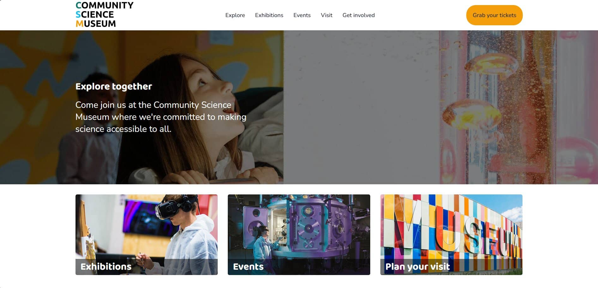

HTML & CSS COURSE ASSIGNMENT
Rainy Days
A responsive outdoor clothing store showcasing products, clear product information and a focused shopping experience.
I'm creating responsive websites with a focus on design, usability, and functionality.

HTML & CSS COURSE ASSIGNMENT
A responsive outdoor clothing store showcasing products, clear product information and a focused shopping experience.

JAVASCRIPT 1 COURSE ASSIGNMENT
An interactive movie discovery website designed to help users explore films through a clean cinema-inspired interface.

SEMESTER PROJECT 1 COURSE ASSIGNMENT
A welcoming museum website presenting exhibitions, visitor information and science activities in an accessible structure.